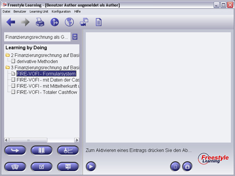

Wenn Sie die einführenden Views wie Text Study, Slide Show oder Case Study durchgearbeitet haben und bereits Kenntnisse zum Lerninhalt erworben haben, können Sie Ihr Wissen durch interaktive Anwendungen vertiefen. Solche Anwendungen können ausführbare Dateien oder Java-Applikationen sein, mit denen sich Interaktionen oder Simulationen zum Lerninhalt durchführen lassen. Wählen Sie ein Element aus der Baumansicht und drücken Sie die "Start"-Schaltfläche in der Interaktionsleiste, um die Anwendung zu starten.

Sobald eine Anwendung gewählt wurde, kann diese mit Hilfe der "Start"-Schaltfläche in dem Interaction Panel gestartet werden.
View-spezifische Interaktions-Schaltflächen
|
Start | Interaktionsanwendung starten |
Zurück zur Hauptseite